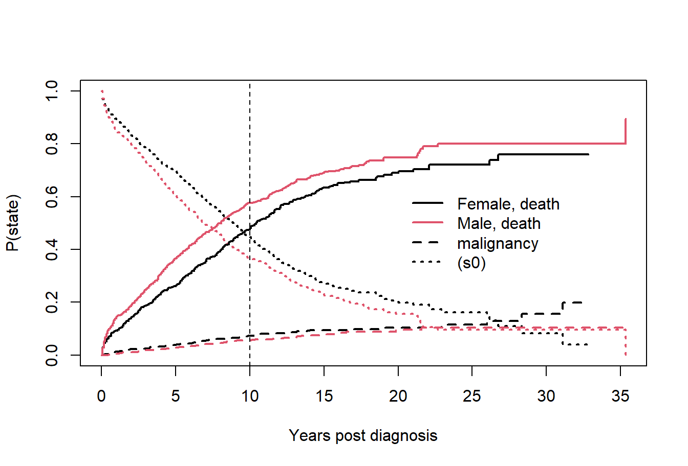
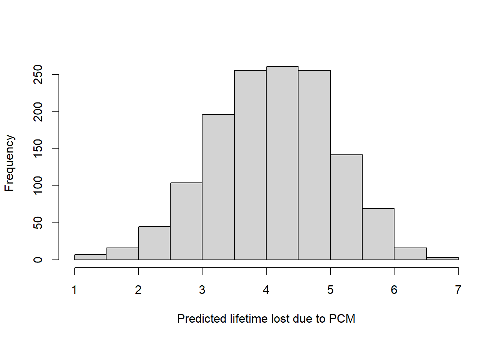

Examples of using eventglm and interpreting the results
Source:vignettes/example-analysis.Rmd
example-analysis.Rmdlibrary(survival) library(eventglm) #> #> Attaching package: 'eventglm' #> The following objects are masked from 'package:survival': #> #> colon, mgus2
Colon cancer treatment and time to death (standard survival)
Our first example concerns the colon dataset, which is included in the package:
?eventglm::colon
This is a randomized trial, so the main interest is in comparing the distributions of time to death between the three treatment arms. Let’s start with a survival curve.
sfit <- survfit(Surv(time, status) ~ rx, data = colon) plot(sfit, col = c("black", "slateblue", "salmon"), xlab = "days since registration", ylab = "survival") legend("bottomleft", fill = c("black", "slateblue", "salmon"), legend = names(sfit$strata))

As we know, hazard ratios are difficult to interpret as causal effects, even in randomized controlled trials. Better options for summarizing the effect of treatment are the survival at a particular time, or the restricted mean survival up to a given time. Let’s compare the survival at 7 years, or about 2500 days since registration.
plot(sfit[1], conf.int = FALSE, xlab = "days since registration", ylab = "survival") seg0 <- summary(sfit[1], times = sfit[1]$time[sfit[1]$time <= 2500]) rect(c(0, seg0$time), 0, c(seg0$time, 2500), c(seg0$surv), border = NA, col = "grey80") lines(sfit[1], conf.int = FALSE) abline(v = 2500, lty = 2) points(x = 2500, y = summary(sfit[1], times = 2500)$surv)

In the figure above, we plot only the survival curve in the observation group. The vertical dotted line is at the time of interest (tmax = 2500 days). The open point is at the estimated survival probability at time tmax, i.e., \(P(T > tmax)\) and the shaded area represents the restricted mean survival up to tmax, i.e., \(E\{\min(T, tmax)\} = \int_0^{tmax} P(T > u) \, du\). We can estimate these things using the survival package:
colon.sfit <- summary(sfit, times = 2500, rmean = 2500) colon.sfit #> Call: survfit(formula = Surv(time, status) ~ rx, data = colon) #> #> rx=Obs #> time n.risk n.event survival std.err lower 95% CI #> 2.50e+03 5.00e+01 1.65e+02 4.55e-01 2.98e-02 4.00e-01 #> upper 95% CI #> 5.18e-01 #> #> rx=Lev #> time n.risk n.event survival std.err lower 95% CI #> 2.50e+03 5.80e+01 1.57e+02 4.85e-01 2.92e-02 4.31e-01 #> upper 95% CI #> 5.46e-01 #> #> rx=Lev+5FU #> time n.risk n.event survival std.err lower 95% CI #> 2.50e+03 6.50e+01 1.21e+02 5.88e-01 2.96e-02 5.33e-01 #> upper 95% CI #> 6.49e-01
And we can now do inference using the eventglm package. First, we fit a regression model for the cumulative incidence, or 1 - survival:
colon.cifit <- cumincglm(Surv(time, status) ~ rx, time = 2500, data = colon) summary(colon.cifit) #> #> Call: #> cumincglm(formula = Surv(time, status) ~ rx, time = 2500, data = colon) #> #> Deviance Residuals: #> Min 1Q Median 3Q Max #> -0.5875 -0.4902 -0.3467 0.4863 2.1103 #> #> Coefficients: #> Estimate Std. Error z value Pr(>|z|) #> (Intercept) 0.54345 0.02946 18.449 < 2e-16 *** #> rxLev -0.02907 0.04173 -0.697 0.48596 #> rxLev+5FU -0.13176 0.04186 -3.148 0.00165 ** #> --- #> Signif. codes: 0 '***' 0.001 '**' 0.01 '*' 0.05 '.' 0.1 ' ' 1 #> #> (Dispersion parameter for quasi family taken to be 1) #> #> Null deviance: 253.10 on 928 degrees of freedom #> Residual deviance: 250.15 on 926 degrees of freedom #> AIC: NA #> #> Number of Fisher Scoring iterations: 2 se.ci <- sqrt(diag(vcov(colon.cifit, type = "robust"))) b.ci <- colon.cifit$coefficients
We find that compared to observation alone, the Levamisole alone treatment group has a -0.03 difference in the cumulative incidence of death at 2500 days, with 95% confidence interval -0.11, 0.05, while the Levamisole plus 5-FU group has a -0.13 difference in the cumulative incidence of death at 2500 days, with 95% confidence interval -0.21, -0.05. This roughly agrees with the Kaplan-Meier estimates from survfit above:
cbind(eventglm = b.ci, survfit = c(1 - colon.sfit$surv[1], (1 - colon.sfit$surv[2:3]) - (1 - rep(colon.sfit$surv[1], 2)))) #> eventglm survfit #> (Intercept) 0.54345139 0.54479221 #> rxLev -0.02907499 -0.02990601 #> rxLev+5FU -0.13175778 -0.13301654
Now for the restricted mean:
colon.rmfit <- rmeanglm(Surv(time, status) ~ rx, time = 2500, data = colon) summary(colon.rmfit) #> #> Call: #> rmeanglm(formula = Surv(time, status) ~ rx, time = 2500, data = colon) #> #> Deviance Residuals: #> Min 1Q Median 3Q Max #> -1839.4 -903.8 620.9 829.9 848.1 #> #> Coefficients: #> Estimate Std. Error z value Pr(>|z|) #> (Intercept) 1667.403 49.949 33.382 < 2e-16 *** #> rxLev -6.074 71.739 -0.085 0.93253 #> rxLev+5FU 194.954 70.498 2.765 0.00569 ** #> --- #> Signif. codes: 0 '***' 0.001 '**' 0.01 '*' 0.05 '.' 0.1 ' ' 1 #> #> (Dispersion parameter for quasi family taken to be 1) #> #> Null deviance: 734414066 on 928 degrees of freedom #> Residual deviance: 726392934 on 926 degrees of freedom #> AIC: NA #> #> Number of Fisher Scoring iterations: 2 se.rm <- sqrt(diag(vcov(colon.rmfit, type = "robust"))) b.rm <- colon.rmfit$coefficients
We find that compared to observation alone, the Levamisole alone treatment group has a -6.07 difference in the mean time to death up to 2500 days, with 95% confidence interval -146.68, 134.54, while the Levamisole plus 5-FU group has a 194.95 difference in the mean time to death up to 2500 days, with 95% confidence interval 56.78, 333.13. Again, this roughly agrees with the Kaplan-Meier estimates from survfit above:
cbind(eventglm = b.rm, survfit = c(colon.sfit$table[1, 5], colon.sfit$table[2:3, 5] - colon.sfit$table[1, 5])) #> eventglm survfit #> (Intercept) 1667.40308 1666.948078 #> rxLev -6.07367 -5.708803 #> rxLev+5FU 194.95446 195.313754
A key advantage of the regression approach is that it gives us the ability to adjust or model other covariates. In this example, since it is a randomized trial, we know that all covariates are independent of treatment assignment. However, several variables are associated with time to death, so in this case they would be called “precision variables”. We would expect that adjusting for age, or the number of positive lymph nodes (more than 4) in the above models would reduce the standard error estimates of the treatment effects, without changing the coefficient estimates. Let’s find out:
colon.ci.adj <- cumincglm(Surv(time, status) ~ rx + age + node4, time = 2500, data = colon) summary(colon.ci.adj) #> #> Call: #> cumincglm(formula = Surv(time, status) ~ rx + age + node4, time = 2500, #> data = colon) #> #> Deviance Residuals: #> Min 1Q Median 3Q Max #> -0.8403 -0.4219 -0.2658 0.5363 1.9691 #> #> Coefficients: #> Estimate Std. Error z value Pr(>|z|) #> (Intercept) 0.318198 0.089345 3.561 0.000369 *** #> rxLev -0.034176 0.040096 -0.852 0.394016 #> rxLev+5FU -0.126894 0.040388 -3.142 0.001679 ** #> age 0.002247 0.001403 1.602 0.109197 #> node4 0.331968 0.036077 9.202 < 2e-16 *** #> --- #> Signif. codes: 0 '***' 0.001 '**' 0.01 '*' 0.05 '.' 0.1 ' ' 1 #> #> (Dispersion parameter for quasi family taken to be 1) #> #> Null deviance: 253.10 on 928 degrees of freedom #> Residual deviance: 229.85 on 924 degrees of freedom #> AIC: NA #> #> Number of Fisher Scoring iterations: 2 colon.rm.adj <- rmeanglm(Surv(time, status) ~ rx + age + node4, time = 2500, data = colon) summary(colon.rm.adj) #> #> Call: #> rmeanglm(formula = Surv(time, status) ~ rx + age + node4, time = 2500, #> data = colon) #> #> Deviance Residuals: #> Min 1Q Median 3Q Max #> -2035.7 -788.5 443.2 647.6 1385.7 #> #> Coefficients: #> Estimate Std. Error z value Pr(>|z|) #> (Intercept) 2067.576 151.579 13.640 < 2e-16 *** #> rxLev 3.421 67.516 0.051 0.95958 #> rxLev+5FU 185.349 67.365 2.751 0.00593 ** #> age -3.735 2.391 -1.562 0.11824 #> node4 -644.960 64.854 -9.945 < 2e-16 *** #> --- #> Signif. codes: 0 '***' 0.001 '**' 0.01 '*' 0.05 '.' 0.1 ' ' 1 #> #> (Dispersion parameter for quasi family taken to be 1) #> #> Null deviance: 734414066 on 928 degrees of freedom #> Residual deviance: 650039827 on 924 degrees of freedom #> AIC: NA #> #> Number of Fisher Scoring iterations: 2
The estimates don’t change (much) and the standard errors reduce by about 5%.
Monoclonal gammopathy data (Competing risks)
Our next example involves the mgus2 dataset, included in the package:
?mgus2 #> Help on topic 'mgus2' was found in the following packages: #> #> Package Library #> eventglm C:/Users/micsac/Documents/R/R-4.0.2/library #> survival C:/Users/micsac/Documents/R/R-4.0.2/library #> #> #> Using the first match ... head(mgus2) #> id age sex dxyr hgb creat mspike ptime pstat futime death etime event #> 1 1 88 F 1981 13.1 1.3 0.5 30 0 30 1 30 death #> 2 2 78 F 1968 11.5 1.2 2.0 25 0 25 1 25 death #> 3 3 94 M 1980 10.5 1.5 2.6 46 0 46 1 46 death #> 4 4 68 M 1977 15.2 1.2 1.2 92 0 92 1 92 death #> 5 5 90 F 1973 10.7 0.8 1.0 8 0 8 1 8 death #> 6 6 90 M 1990 12.9 1.0 0.5 4 0 4 1 4 death
This dataset has a number of covariates, and the time until progression to plasma cell malignancy (PCM), or death. Here the event PCM is of primary interest, with death being a competing event. The data are described and analyzed in the survival vignette (section 2.3.2):
crfit <- survfit(Surv(etime, event) ~ sex, eventglm::mgus2) summary(crfit, times = 120) #> Call: survfit(formula = Surv(etime, event) ~ sex, data = eventglm::mgus2) #> #> time n.risk n.event P((s0)) P(pcm) P(death) #> 120 214 331 0.446 0.0739 0.480 #> 120 210 450 0.370 0.0553 0.575 print(crfit, rmean = 120) #> Call: survfit(formula = Surv(etime, event) ~ sex, data = eventglm::mgus2) #> #> n nevent rmean* #> sex=F, (s0) 631 0 82.983485 #> sex=M, (s0) 753 0 74.808346 #> sex=F, pcm 631 59 4.794595 #> sex=M, pcm 753 56 3.501305 #> sex=F, death 631 370 32.221921 #> sex=M, death 753 490 41.690349 #> *mean time in state, restricted (max time = 120 ) plot(crfit, col=1:2, noplot="", lty=c(3,3,2,2,1,1), lwd=2, xscale=12, xlab="Years post diagnosis", ylab="P(state)") legend(240, .65, c("Female, death", "Male, death", "malignancy", "(s0)"), lty=c(1,1,2,3), col=c(1,2,1,1), bty='n', lwd=2) abline(v = 120, lty = 2)

We can get similar estimates for the cumulative incidence of pcm at 10 years and the expected lifetime lost due to pcm up to 10 years with similar commands as above. Note the cause option to specify the cause of interest.
mgfitci <- cumincglm(Surv(etime, event) ~ sex, cause = "pcm", time = 120, data = mgus2) summary(mgfitci) #> #> Call: #> cumincglm(formula = Surv(etime, event) ~ sex, time = 120, cause = "pcm", #> data = mgus2) #> #> Deviance Residuals: #> Min 1Q Median 3Q Max #> -0.08163 -0.07447 -0.06306 -0.05536 1.23923 #> #> Coefficients: #> Estimate Std. Error z value Pr(>|z|) #> (Intercept) 0.07383 0.01086 6.800 1.04e-11 *** #> sexM -0.01857 0.01384 -1.342 0.18 #> --- #> Signif. codes: 0 '***' 0.001 '**' 0.01 '*' 0.05 '.' 0.1 ' ' 1 #> #> (Dispersion parameter for quasi family taken to be 1) #> #> Null deviance: 88.507 on 1383 degrees of freedom #> Residual deviance: 88.388 on 1382 degrees of freedom #> AIC: NA #> #> Number of Fisher Scoring iterations: 2 mgfitrmean <- rmeanglm(Surv(etime, event) ~ sex, cause = "pcm", time = 120, data = mgus2) summary(mgfitrmean) #> #> Call: #> rmeanglm(formula = Surv(etime, event) ~ sex, time = 120, cause = "pcm", #> data = mgus2) #> #> Deviance Residuals: #> Min 1Q Median 3Q Max #> -4.971 -4.863 -3.678 -3.508 113.292 #> #> Coefficients: #> Estimate Std. Error z value Pr(>|z|) #> (Intercept) 4.7926 0.7883 6.080 1.2e-09 *** #> sexM -1.2929 0.9902 -1.306 0.192 #> --- #> Signif. codes: 0 '***' 0.001 '**' 0.01 '*' 0.05 '.' 0.1 ' ' 1 #> #> (Dispersion parameter for quasi family taken to be 1) #> #> Null deviance: 450225 on 1383 degrees of freedom #> Residual deviance: 449652 on 1382 degrees of freedom #> AIC: NA #> #> Number of Fisher Scoring iterations: 2
Sex may be an important predictor of time to pcm, what about the other variables?
mgfitci2 <- cumincglm(Surv(etime, event) ~ sex + age + hgb, cause = "pcm", time = 120, data = mgus2) mgfitrmean2 <- rmeanglm(Surv(etime, event) ~ sex + age + hgb, cause = "pcm", time = 120, data = mgus2) summary(mgfitrmean2) #> #> Call: #> rmeanglm(formula = Surv(etime, event) ~ sex + age + hgb, time = 120, #> cause = "pcm", data = mgus2) #> #> Deviance Residuals: #> Min 1Q Median 3Q Max #> -7.081 -4.795 -4.034 -3.278 112.970 #> #> Coefficients: #> Estimate Std. Error z value Pr(>|z|) #> (Intercept) 3.98253 3.87360 1.028 0.304 #> sexM -0.98992 0.99168 -0.998 0.318 #> age 0.04466 0.02941 1.518 0.129 #> hgb -0.18754 0.25091 -0.747 0.455 #> #> (Dispersion parameter for quasi family taken to be 1) #> #> Null deviance: 448531 on 1370 degrees of freedom #> Residual deviance: 447319 on 1367 degrees of freedom #> (13 observations deleted due to missingness) #> AIC: NA #> #> Number of Fisher Scoring iterations: 2
The objects returned by cumincglm and rmeanglm inherit from glm, so many methods are available. First, the vcov function has several options for calculation of the estimated variance of the estimated regression parameters. By default, the robust variance estimates are used, based on the Huber-White estimator. Other options are naive, and corrected, which are the corrected estimators suggested by Overgaard et al. (2017) which are based on a second order Von-Mises expansion. We can also use the bootstrap. This recalculated the pseudo-observations every time, but it is still pretty fast because of the C code. Let’s compare:
nboot <- 100 # use a bigger number for real bootests <- matrix(NA, nrow = nboot, ncol = 4) for(i in 1:nboot) { mgus.b <- mgus2[sample(1:nrow(mgus2), replace = TRUE), ] mgfitrmean.b <- rmeanglm(Surv(etime, event) ~ sex + age + hgb, cause = "pcm", time = 120, data = mgus.b) bootests[i,] <- mgfitrmean.b$coefficients } se.boot <- sqrt(diag(cov(bootests))) knitr::kable(cbind(se.boot = se.boot, se.robust = sqrt(diag(vcov(mgfitrmean2))), #se.corrected = sqrt(diag(vcov(mgfitrmean2, type = "corrected"))), se.naive = sqrt(diag(vcov(mgfitrmean2, type = "naive")))), digits = 3)
| se.boot | se.robust | se.naive | |
|---|---|---|---|
| (Intercept) | 3.967 | 3.874 | 4.749 |
| sexM | 1.069 | 0.992 | 1.012 |
| age | 0.029 | 0.029 | 0.041 |
| hgb | 0.263 | 0.251 | 0.253 |
The corrected estimator fails pretty often, because it doesn’t handle ties, and the benefits are negligible, and thus may be removed from the package in the future.
Residuals also work, using the scaling factor suggested by Perme and Andersen (2008), as do predictions. Predicted restricted means give a possible method to predict individual event times, while the predicted cumulative incidence should be probabilities. Note that with the identity link, the predicted cumulative incidence is not guaranteed to be between 0 and 1.

mgus2$prob.pcm10 <- predict(mgfitci2, newdata = mgus2) mgus2$pseudo.ci <- mgfitci$y summary(mgus2$prob.pcm10) #> Min. 1st Qu. Median Mean 3rd Qu. Max. NA's #> 0.05169 0.05559 0.05695 0.06348 0.07297 0.07522 13 cutps <- quantile(mgus2$prob.pcm10, seq(.1, .9, by = .1), na.rm = TRUE) mgus2$prob.cut <- cut(mgus2$prob.pcm10, cutps) pred.p <- cutps[-length(cutps)] + diff(cutps) obs.p <- c(by(mgus2$pseudo.ci, mgus2$prob.cut, mean)) plot(obs.p ~ pred.p, xlab = "predicted", ylab = "observed") abline(0, 1)

Censoring assumptions
By default, we assume that time to censoring is independent of the time to the event, and of all covariates in the model. This is more restrictive than parametric survival models, or Cox regression, which only assumes that censoring time is conditionally independent of event time given the covariates in the model. We provide several options to relax that assumption using the model.censoring and formula.censoring options. The first is to compute stratified pseudo observations, which assumes that the censoring is independent given a set of categorical covariates:
colon.ci.cen1 <- cumincglm(Surv(time, status) ~ rx + age + node4, time = 2500, data = colon, model.censoring = "stratified", formula.censoring = ~ rx)
Next, we can assume that the time to censoring follows a Cox model given a set of covariates. By default, the same covariate formula (right hand side) as the main model is used, but any formula can be specified. We can also use Aalens additive hazards model instead of a Cox model for the censoring distribution. Then inverse probability of censoring weighted pseudo observations are used (Overgaard, Parner, and Pedersen 2019). According to our simulation study, the stratified option works quite well even when the censoring model is misspecified, and the Aalen additive model tends to work better than the Cox model.
colon.ci.cen2 <- cumincglm(Surv(time, status) ~ rx + age + node4, time = 2500, data = colon, model.censoring = "coxph", formula.censoring = ~ rx + age + node4) colon.ci.cen3 <- cumincglm(Surv(time, status) ~ rx + age + node4, time = 2500, data = colon, model.censoring = "aareg", formula.censoring = ~ rx + age + node4) knitr::kable(cbind("indep" = colon.ci.adj$coefficients, "strat" = colon.ci.cen1$coefficients, "coxipcw" = colon.ci.cen2$coefficients, "aalenipcw" = colon.ci.cen3$coefficients), digits = 3)
| indep | strat | coxipcw | aalenipcw | |
|---|---|---|---|---|
| (Intercept) | 0.318 | 0.314 | 0.297 | 0.317 |
| rxLev | -0.034 | -0.035 | -0.031 | -0.036 |
| rxLev+5FU | -0.127 | -0.128 | -0.110 | -0.129 |
| age | 0.002 | 0.002 | 0.003 | 0.002 |
| node4 | 0.332 | 0.334 | 0.330 | 0.335 |
Relative survival/net survival
Following Professor Paul Lambert’s example here: https://pclambert.net/software/stpp/using_stpp/ , let’s load the datasets:
library(data.table) # from https://pclambert.net/data/colon.dta colon2 <- rio::import(system.file("extdata", "colon.dta", package = "eventglm")) colon2$surv_mm_trunc <- ifelse(colon2$surv_mm > 120.5, 120.5, colon2$surv_mm) colon2$death <- colon2$status %in% c(1, 2) colon2$death[colon2$surv_mm > colon2$surv_mm_trunc] <- 0 # from https://pclambert.net/data/popmort.dta lifetab <- data.table(rio::import(system.file("extdata", "popmort.dta", package = "eventglm")))
Now we will estimate the marginal relative survival using the approach described in Pavlič and Pohar Perme (2019), which is based on the estimator:
\[ RS(t) = n^{-1}\sum_{i = 1}^n\frac{PO_i(t)}{S_{P}(t | D)}, \]
where \(S_{P}(t | D)\) is the survival probability based on the life tables for the demographics \(D\) of patient \(i\), and \(PO_i(t)\) are the pseudo observations for time \(t\). We get the survival probability by merging with the life table estimates, and the pseudo observations from our package. The prob from the life tables is the probability of surviving one year, so to get the probability of surviving 5 and 10 years, we need to calculate the cumulative product estimates.
lifetab[, prob.5 := prod(lifetab[`_age` %in% .BY[["_age"]]:(.BY[["_age"]]+4) & `_year` %in% .BY[["_year"]]:(.BY[["_year"]]+4) & `_year` == .BY[["_year"]] - .BY[["_age"]] + `_age` & sex == .BY[["sex"]] ]$prob, na.rm = TRUE), by = c("sex", "_year", "_age")] lifetab[, prob.10 := prod(lifetab[`_age` %in% .BY[["_age"]]:(.BY[["_age"]]+9) & `_year` %in% .BY[["_year"]]:(.BY[["_year"]]+9) & `_year` == .BY[["_year"]] - .BY[["_age"]] + `_age` & sex == .BY[["sex"]] ]$prob, na.rm = TRUE), by = c("sex", "_year", "_age")] colon2 <- merge(colon2, lifetab, by.x = c("sex", "yydx", "age"), by.y = c("sex", "_year", "_age"), all.x = TRUE, all.y = FALSE) fit1 <- cumincglm(survival::Surv(surv_mm_trunc, death) ~ 1, data = colon2, time = 1 * 12) fit5 <- cumincglm(survival::Surv(surv_mm_trunc, death) ~ 1, data = colon2, time = 5 * 12) fit10 <- cumincglm(survival::Surv(surv_mm_trunc, death) ~ 1, data = colon2, time = 10 * 12) colon2$po_1 <- 1 - fit1$y colon2$po_5 <- 1 - fit5$y colon2$po_10 <- 1 - fit10$y knitr::kable(cbind(time = c(1, 5, 10), relsurv.pseudo = with(colon2, c(mean(po_1 / prob), mean(po_5 / prob.5), mean(po_10 / prob.10)), ), relsurv.pohar = c(0.682, 0.479, 0.441)), digits = 3)
| time | relsurv.pseudo | relsurv.pohar |
|---|---|---|
| 1 | 0.677 | 0.682 |
| 5 | 0.477 | 0.479 |
| 10 | 0.411 | 0.441 |
They are pretty close to those computed using the Pohar Perme estimator reported by Prof Lambert.
Case cohort sampling
Parner, Andersen, and Overgaard (2020) describe how to fit regression models with pseudo-observations that account for case-cohort sampling. The basic idea is weighted estimating equations, which we can implement easily with the weights argument that gets passed to glm.fit. First let’s create a case-cohort sample of the colon2 dataset by sampling the cancer deaths (status == 1) with probability 0.8, and a random subcohort with probability 0.1.
colon2$status2 <- factor(ifelse(colon2$status == 4, 0, colon2$status), labels = c("censored", "cancer death", "other death")) subc <- rbinom(nrow(colon2), size = 1, p = .2) samp.ind <- subc + (1 - subc) * (colon2$status == 1) * rbinom(nrow(colon2), size = 1, p = .9) colon.cc <- colon2[as.logical(samp.ind), ] colon.cc$samp.wt <- 1 / ifelse(colon.cc$status == 1, .2 + .8 * .9, .2)
Now, the weighted regression model should give similar results as the unweighted one in the full sample:
cfit.cc <- cumincglm(Surv(surv_mm, status2) ~ age + sex + factor(subsite), cause = "cancer death", time = 5 * 12, data = colon.cc, weights = samp.wt) cfit.full <- cumincglm(Surv(surv_mm, status2) ~ age + sex + factor(subsite), cause = "cancer death", time = 5 * 12, data = colon2) knitr::kable(cbind(casecohort = cfit.cc$coefficients, fullsamp = cfit.full$coefficients), digits = 2)
| casecohort | fullsamp | |
|---|---|---|
| (Intercept) | 0.27 | 0.21 |
| age | 0.00 | 0.00 |
| sex | 0.00 | 0.00 |
| factor(subsite)2 | 0.05 | 0.06 |
| factor(subsite)3 | 0.03 | 0.00 |
| factor(subsite)4 | 0.00 | 0.00 |
References
Overgaard, Morten, Erik Thorlund Parner, and Jan Pedersen. 2019. “Pseudo-Observations Under Covariate-Dependent Censoring.” Journal of Statistical Planning and Inference 202: 112–22.
Overgaard, Morten, Erik Thorlund Parner, Jan Pedersen, and others. 2017. “Asymptotic Theory of Generalized Estimating Equations Based on Jack-Knife Pseudo-Observations.” The Annals of Statistics 45 (5): 1988–2015.
Parner, Erik T, Per K Andersen, and Morten Overgaard. 2020. “Cumulative Risk Regression in Case–Cohort Studies Using Pseudo-Observations.” Lifetime Data Analysis, 1–20.
Pavlič, Klemen, and Maja Pohar Perme. 2019. “Using Pseudo-Observations for Estimation in Relative Survival.” Biostatistics 20 (3): 384–99.
Perme, Maja Pohar, and Per Kragh Andersen. 2008. “Checking Hazard Regression Models Using Pseudo-Observations.” Statistics in Medicine 27 (25): 5309–28.